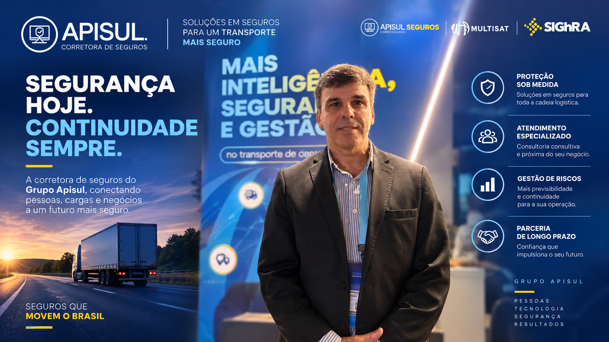
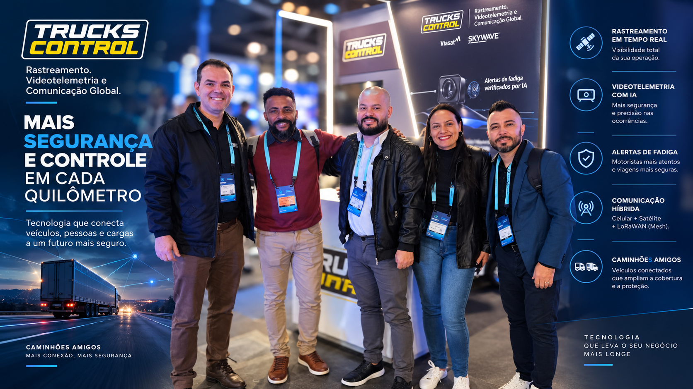
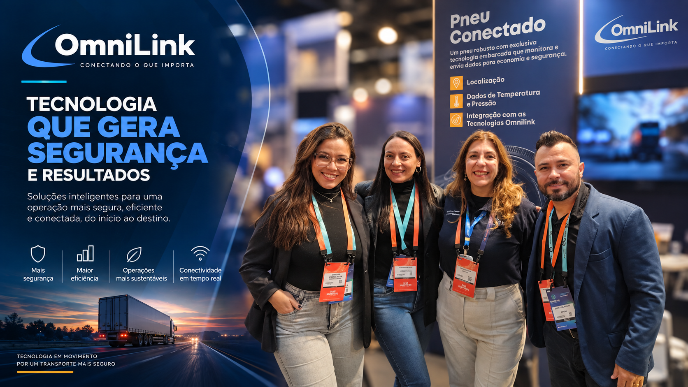
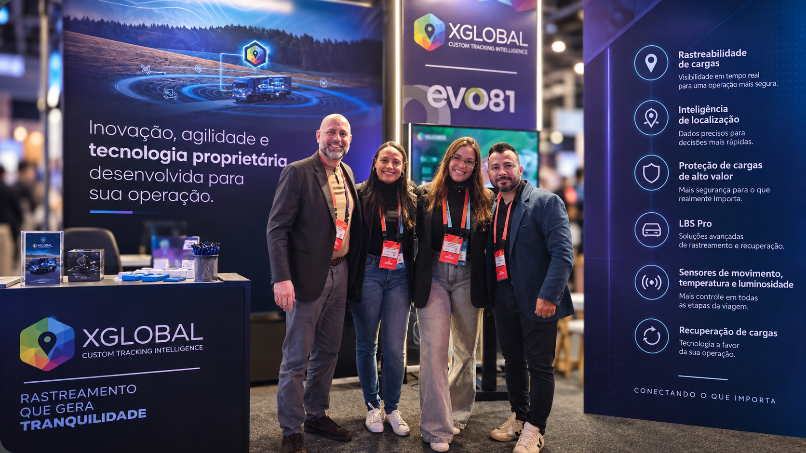

MultiSat
Do monitoramento à prevenção — Quando o gerenciamento de risco começa a entender o comportamento
Ler entrevista →
Apisul Corretora de Seguros
Quando a apólice conhece a estrada — Seguro pensado para quem vive a operação
Ler entrevista →
Apisul Produtos Digitais & IA
O filme, não a foto — Como a Apisul lê o comportamento do motorista em tempo real
Ler entrevista →SIGhRA
O rosto como chave — Biometria facial trava o caminhão até confirmar quem está dirigindo
Ler entrevista →Carga Online
Motorista engajado, não motorista pressionado — A plataforma que trava o caminhão antes da viagem começar
Ler entrevista →
Trucks Control
Quando o jammer entra em cena — O caminhão vizinho vira rede
Ler entrevista →
OmniLink
Vinte e seis anos de hardware — Até virar integrador de qualquer tecnologia
Ler entrevista →Jomed Transportadora
Frota nova, biometano e um prêmio de peso — Como reter motorista num mercado em escassez
Ler entrevista →
X-Global
Uma isca que dura um ano em vez de um mês — O canal que atravessa o baú de aço
Ler entrevista →T4S Tecnologia
Um imobilizador que ninguém desarma em segundos — Mesh entre 42 mil caminhões contra roubo de carga
Ler entrevista →Netfleet / Driver Série A
Telemetria sem instalar nada — Só com o celular do motorista
Ler entrevista →Grupo Tracker
Quando o GPS cala — A radiofrequência continua falando
Ler entrevista →
Ita Frio
Chocolate viajando em caminhão comum — Sem refrigeração ligada
Ler entrevista →